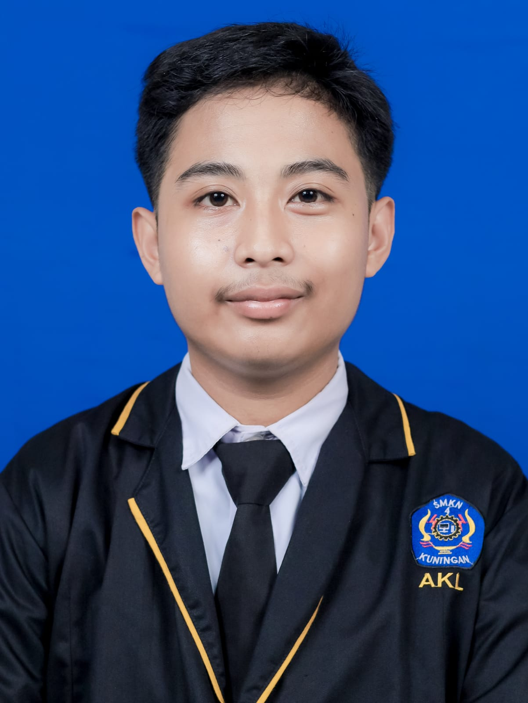

Selamat Datang!
Laman resmi portofolio dan kegiatan akademik Muhamad Diar Fahrurrozi, mahasiswa Program Studi Sistem Informasi Universitas Kuningan.
Tentang Saya
Saya adalah mahasiswa aktif Program Studi Sistem Informasi, Fakultas Ilmu Komputer, Universitas Kuningan semester 3. Saat ini saya sedang mempelajari berbagai hal tentang teknologi informasi, khususnya dalam bidang Pemrograman Web dan Pengembangan Sistem Informasi.
Website ini dibuat sebagai portofolio pribadi sekaligus sarana untuk membagikan tugas, materi perkuliahan, serta informasi akademik sehari-hari.
Riwayat Pendidikan
- 2025 — Sekarang (Sarjana)
S1 Sistem Informasi — Universitas Kuningan - 2022 — 2025 (SMK)
SMK Negeri Kuningan Anda - 2019 — 2022 (SMP)
SMP Negeri 2 Cidahu - 2013 — 2019 (SD)
SD Negeri 2 Cikeusal
Akademik
Jadwal Perkuliahan Semester 3
Senin, 2 November 2026
| Mulai | Selesai | Jenis | Kelas Mata Kuliah | Ruang |
|---|---|---|---|---|
| 13:00 | 14:35 | Kuliah | SINFCW241709 - Riset Operasi (25-02) | FKOM-Ruang H |
| 14:40 | 16:15 | Kuliah | SINFCW241609 - Pemrograman Dasar (25-02) | FKOM-Ruang I |
Selasa, 3 November 2026
| Mulai | Selesai | Jenis | Kelas Mata Kuliah | Ruang |
|---|---|---|---|---|
| 08:00 | 09:35 | Praktikum | SINFCW241109 - Analisis dan Perancangan Sistem Informasi (25-02) | FKOM-Lab. Multimedia |
| 09:40 | 11:15 | Kuliah | SINFCW241809 - Statistika Data (25-02) | FKOM-Ruang K |
| 14:40 | 16:15 | Praktikum | SINFCW241609 - Pemrograman Dasar (25-02) | FKOM-Lab. RPL |
Rabu, 4 November 2026
| Mulai | Selesai | Jenis | Kelas Mata Kuliah | Ruang |
|---|---|---|---|---|
| 10:30 | 12:05 | Kuliah | SINFCW241109 - Analisis dan Perancangan Sistem Informasi (25-02) | FKOM-Ruang E |
| 13:00 | 14:35 | Kuliah | SINFCW241409 - Kalkulus (25-02) | FKOM-Ruang I |
Kamis, 5 November 2026
| Mulai | Selesai | Jenis | Kelas Mata Kuliah | Ruang |
|---|---|---|---|---|
| 08:00 | 09:35 | Praktikum | SINFCW241909 - Web Desain (25-02) | FKOM-Lab. RPL |
| 09:40 | 11:15 | Kuliah | SINFCW241309 - English Communication for IT (25-02) | FKOM-Ruang A |
| 13:00 | 14:35 | Kuliah | SINFCW241909 - Web Desain (25-02) | FKOM-Ruang C |
Jumat, 6 November 2026
| Mulai | Selesai | Jenis | Kelas Mata Kuliah | Ruang |
|---|---|---|---|---|
| 08:00 | 10:25 | Kuliah | SINFCW241209 - Analisis Proses Bisnis (25-02) | FKOM-Ruang I |
| 13:00 | 14:35 | Praktikum | SINFCW241809 - Statistika Data (25-02) | FKOM-Lab. Multimedia |
| 15:30 | 17:05 | Kuliah | SINFCW241509 - Arsitektur Komputer dan Sistem Operasi (25-02) | FKOM-Ruang R |
Hubungi Saya
Email
20250910022@uniku.ac.id
Alamat
Kuningan, Jawa Barat
Telepon / WhatsApp
+62 8xx-xxxx-xxxx
Status Akademik
Mahasiswa Aktif Semester 3